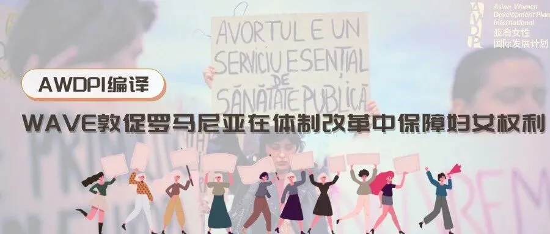
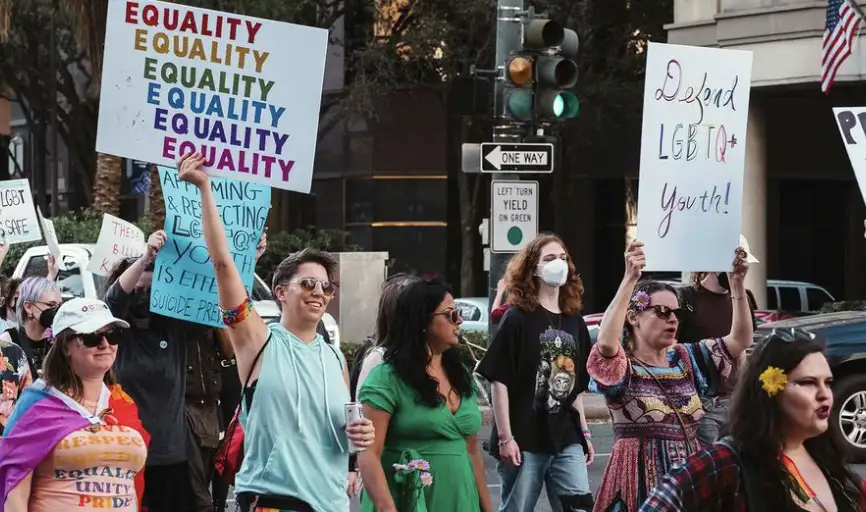
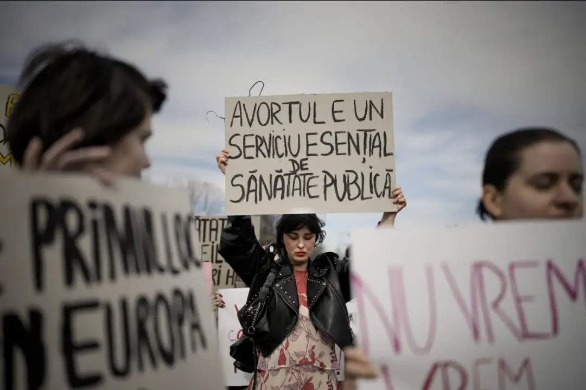
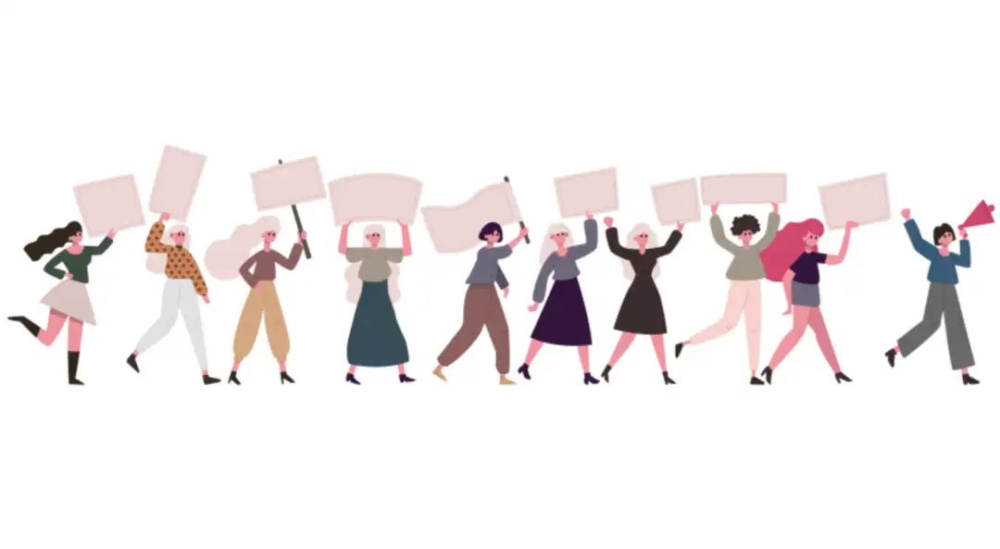

向格鲁吉亚学习：欧洲大趋势的一部分

罗马尼亚的风险

虽然罗马尼亚的情况与格鲁吉亚不同，但其模式相似：通过合并、废除或降级等制度性变革削弱性别平等专门机制，而这类改变往往并非孤立发生。尽管政府宣称改革是为了提高效率，但令人担忧的不仅是这些措施的先后顺序，更在于它们对妇女权利制度及其维护者的累积性影响。
此次重组缺乏真正的公众咨询或公民社会参与，这对罗马尼亚如何继续履行对妇女和女孩的义务提出了重要质疑。虽然政府与公民社会和学界举行过部分会议，但WAVE在罗马尼亚的成员反映，这一过程仅具形式，他们的意见未被纳入拟议的立法中。如此重要的举措不应在密室中决定，而应充分吸纳活跃在相关领域的女性非政府组织及学术专家的经验与意见。
WAVE还特别关注到，此次合并与其他两项立法倡议同时出现：一是拟将合法堕胎期限从14周缩短至8周，并将8周胎儿定义为“人”；二是限制被认定为家庭暴力的行为范围。这些措施叠加效应可能对妇女的自主、安全和平等造成严重影响。
法律义务与国际后果
专业化应对的必要性
WAVE长期主张，针对妇女和家庭暴力问题，国家机构应采取性别敏感的应对方式，并为由民间组织提供的妇女专业服务提供充足资金，以确保妇女和女孩能够获得关键支持。
取消专门性别机构的制度改革可能引发连锁效应，导致职责泛化、支持泛化。一般性的受害者服务固然重要，但无法替代妇女专业服务机构提供的专门知识与女性主义框架，包括处理胁迫控制、经济虐待、性暴力以及父权暴力的代际影响等创伤知情服务。同样，反人口贩运也需要具备安全协议与跨境合作的专门应对机制。拟议中的合并有可能导致“一刀切”的普遍化模式，无法满足性别暴力幸存者的特殊需求。
事实证明，削弱性别平等机构和妇女服务会带来致命后果。对生殖健康服务的限制威胁妇女的健康与自主，削弱的家庭暴力防护让施暴行为得以继续。这些问题关乎生死。罗马尼亚在道义和法律上都有义务确保全面的支持服务、强健的制度机制、司法途径的可及性，以及一个让妇女免于暴力的社会。为妇女专业服务提供资金不是奢侈，而是法律要求。
我们的呼吁

原文链接：
https://wave-network.org/wp-content/uploads/081025_FINAL_WAVE-Statement-on-Romania_onSupportofWAVEmembers.pdf
译者｜林佳玥
排版&封面｜吴雨桐
图片｜Unsplash